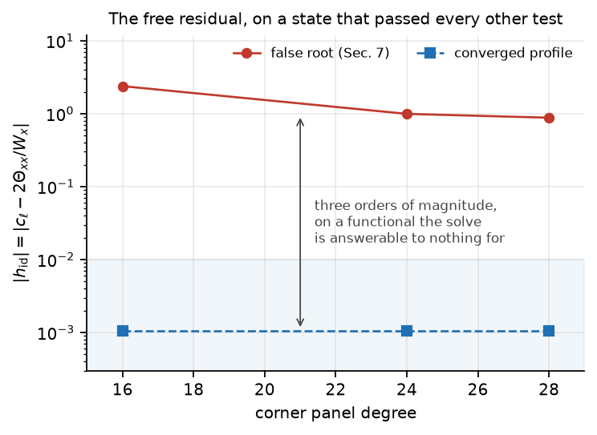

An independent computation: the scaling exponent, an eigenvalue-free stability certificate, and a free-residual test that catches a false root.
The profile underlying the Luo–Hou scenario for 3D axisymmetric Euler with boundary is solved as a root problem with an explicit sparse Jacobian, rather than by marching or by neural approximation — a third route with a different failure mode from either existing computation.
Residual, distinctness, parameter stability and morphological coherence are
jointly insufficient to certify a self-similar profile. The gauge closure
leaves one functional unused — the corner identity
h_id = c_l − 2Θxx/Wx — and reporting it beside every solve
separates the true profile from the artifact by three orders of magnitude, at a cost
of one extra line of output.

Every number in the note traces to a logged run in the repository: the solver, the measurement scripts, the raw logs, the converged fields, and the figure-generating code. The claims ledger grades every statement in the paper against its evidence, and every retraction made during the work is recorded rather than removed.